Advertising Measurement
This version: February 2026 | License: CC BY 4.0 | We use javascript to track readership.
Our main goal is to help advertisers make better decisions. We welcome reuse with attribution. Please share widely.
Domain Knowledge
- Broad context to motivate and interpret advertising measurement
Advertising sales revenue, 1950-2019
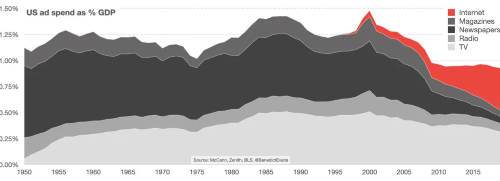
For 70 years, between $0.95-1.50 of every $100 spent in America bought an ad. These figures report advertising sales revenue to publishers (i.e., entities that attract and sell consumer attention) and exclude supply chain fees (e.g., ad agencies), which are considerable. What else do you see?
Online Ad Revenues, 2020-2024
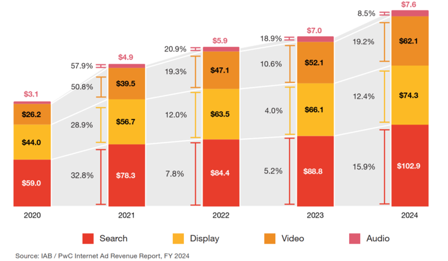
These data expand the Internet bar. The Interactive Advertising Bureau collects ad sales revenue by format from online ad sellers and supply chain firms. Total spending grew from $132.3B in 2020 to $246.9B in 2024. What else do you see?
Large Sellers’ Ad Revenues as % of US GDP, 2002-23
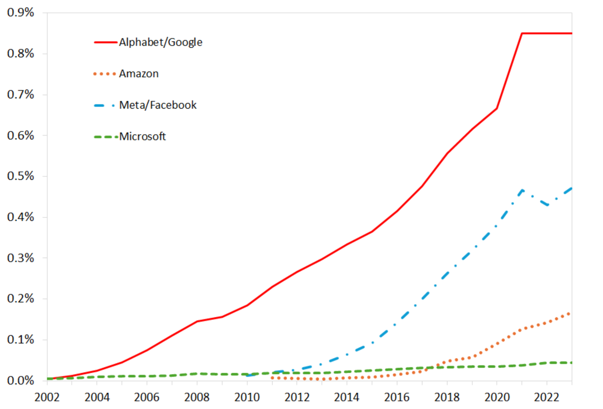
Online advertising sales are increasingly dominated by a few large firms. We used to call them “the duopoly,” but now we call them “the triopoly.”
Large Ad Sellers’ Profit Percentage, 2002-2023
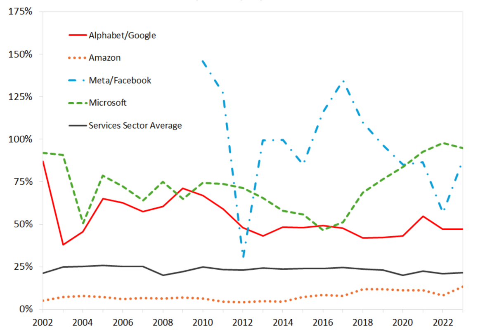
Online advertising sales is a remarkably high-margin line of business, in part due to limited marginal costs, high efficiencies, and supply-side concentration. Note, these percentages are across all lines of business. What might these profit margins indicate to ad buyers?
Toy economics of advertising
- Suppose we pay $10 to buy 1,000 digital ad OTS. Suppose 3 people click, 1 person buys.
- Ad profit > 0 if transaction margin > $10
- But we bought ads for 999 people who didn’t buy
- Or, ad profit > 0 if CLV > $10
- Long-term mentality justifies increased ad budget
- Or, ad profit > 0 if CLV > $10 and if the customer would not have purchased otherwise
- This is “incrementality”
- But how would we know if they would have purchased otherwise?
- Ad effects are subtle–typically, 99.5-99.9% don’t convert–but ad profit can still be robust
- Ad profit depends on ad cost, conversion rate, margin … and how we formulate our objective function
- Exception: Search ads may convert at 1-10+%, but incrementality questions are even bigger
Right ad, right person, right context, right time?
- Imagine you’re selling mortgages. Mortgage lenders offer numerous loans at distinct price points. Yet 78% of consumers say they only apply to a single lender/broker for a quote (FHFA 2024), and most borrowers actively seek a loan for only a few days or less
- To advertise profitably, you may need to find people who
- Can qualify for a loan
- Actively want to buy a new home
- Are thinking about the finance process
- Have not signed a loan yet
- Predicting which consumers to reach is necessary but insufficient. You also have to identify the brief window of time when an ad might shift each borrower’s behavior, and reach them in a context where they might act on your message
Even a perfectly efficient and omniscient advertising industry might struggle to learn how to optimize advertising delivery. What behavioral or contextual signals might indicate mortgage loan receptivity? How much more cost-effective would these targeting signals make the ads?
AI Trades Online Ads

Advertising was the second industry to automate trading, after finance. ‘Programmatic’ methods are defined by automation and optimization. Over 90% of online advertising revenue flows through Programmatic channels, in which buyers and sellers are both represented by computerized agents. What is being automated and optimized, and for whose benefit?
The Ad Tech Ecosystem
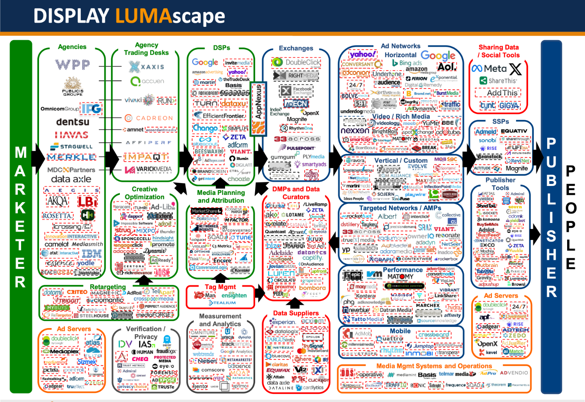
Luma Partners maps ad tech ecosystems. Each logo is a company that intermediates between advertisers and publishers: data/algorithm specialists, representatives, and marketplaces. This map is one among many.
Google Performance Max

Google Pmax is the ultimate expression of programmatic advertising. You give Google your goals, your budget, and things it can say in ads. Google decides where, when and how to spend your money, designs your ad, then tells you how well it did. Launched in 2021; over 1 million advertisers served by 2025. Meta’s Advantage+ is similar.
The “Ad Tech Tax”
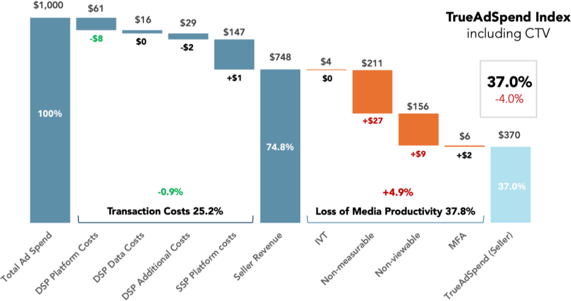
2025Q2 data show that DSP takes 11%, SSP takes 15%, publisher receives 75%, and about half of that is verifiably viewable by human recipients. What are DSP, SSP, IVT, Measurable, Viewable, MFA?
Effective Frequency

Have you ever had an ad “follow you around”?
Age-old advertising theory posits a nonlinear effective frequency curve, which is to say, the marginal effect of an ad on conversion probability depends on how many times the consumer sees the ad.
Why is effectiveness convex for exposures 1-3?
Frequency Capping limits ad exposures per individual. Retargeting targets consumers based on past actions (e.g., product detail pageviews, add-to-cart)
Advertising avoidance
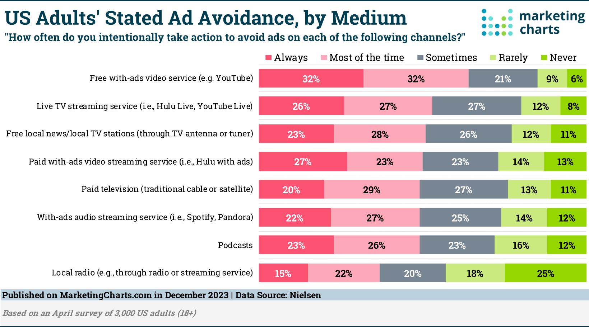
Can an ad work if a consumer avoids it? About half of consumers say they usually or always skip ads. Do you use an ad blocker in your favorite browser? Ad load and ad nuisance are the “attentional prices” that subsidize our media: without ads, we would pay more for content.
Consumer Attention by Medium
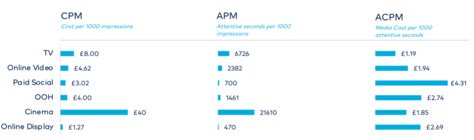
Advertising media vary in average attention attracted (i.e. eyes-on-screen) and advertising price. These data reflect attention measurements and prices by medium. What do you see?
Privacy Perceptions
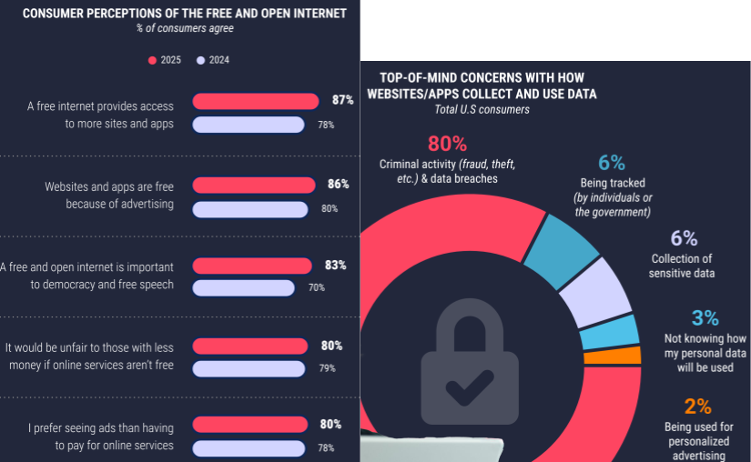
Consumers don’t especially love advertising but they mostly understand that advertising subsidizes media access, and most prefer to pay with attention rather than money. Personalized advertising ranks low on most consumers’ data privacy concerns. Empirical studies usually show that personalized ads generate more conversions because they are more relevant.
Retail Media Networks

Retail media networks (e.g., Amazon, Walmart) provide data for ad targeting, sell sponsored product search listings, sell ads on behalf of publishers, and measure advertising conversions. RMNs are growing quickly as they cannibalize older trade promotions budgets.
Brand Safety and Suitability
- Brand safety: Protect brands against negative impacts on consumer opinion from ads appearing near specific types of content
- E.g., proximate to military conflict, obscenity, drugs, hate speech
- Keyword blacklists and whitelists determine contextual ad bids, yet fraudulent ad sales may place brand ads in non-safe contexts
- Ad platforms have seen “advertiser boycotts” demanding content moderation improvements; monetization is expanding recently
- Brand suitability: Identifies brand-aligned content to improve ad delivery
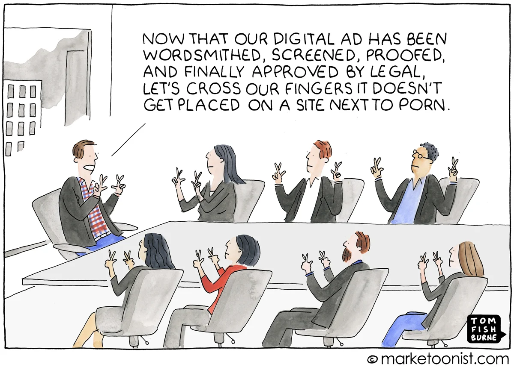
How much do companies spend on Advertising?
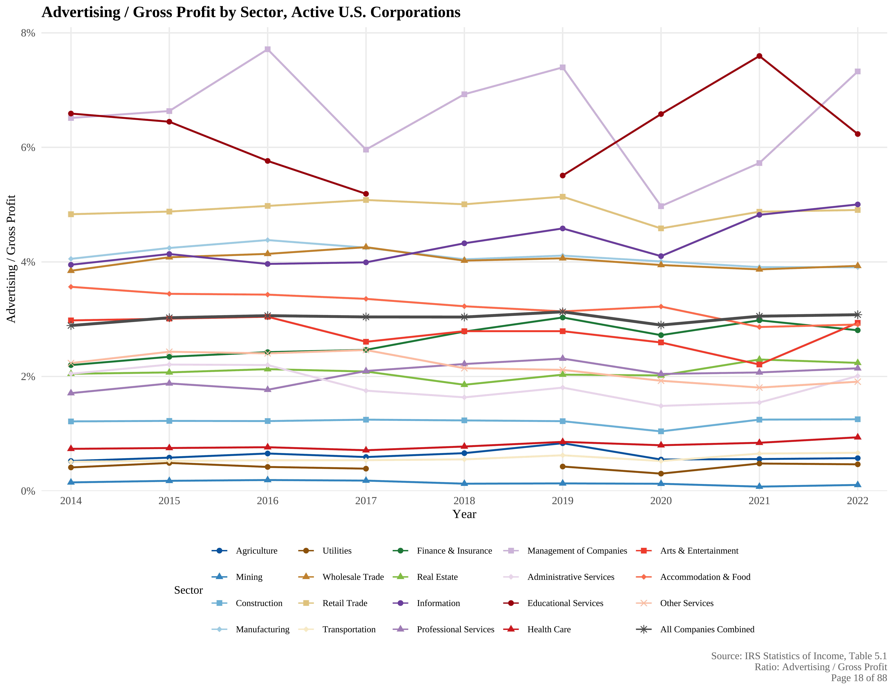
The average US corporation spends about 3.1% of gross margin on advertising deductions. Gross margin ranges from 3-5x net margin, so the modal firm could increase net income by 10.3-18.5% by setting ads to zero (i.e. 100/(100-9.3) to 100/(100-15.5)). Or could it? What would happen to top line revenue and cost efficiencies? [2 missing data points were withheld by source for confidentiality purposes]
What is Incrementality?

Incrementality is the difference between post-campaign conversions and the conversions that would have occurred anyway without the campaign.
The word incrementality is only used in marketing.
Honey: A Case Study in Attribution Fraud

Honey, a PayPal-owned browser extension with 17 million members, was found to replace influencers’ affiliate codes with its own, stealing affiliate marketing fees from partners. This is one example of “cookie stuffing” attribution fraud, and helps to illustrate why ad buyers don’t always trust ad sellers. Incrementality estimates verify marketing value delivered without relying on seller statements.
Causality
Examples, fallacies and motivations
Correlation \(\ne\) Causation

This chart shows a near-perfect correlation between margarine consumption and divorce rates—but does margarine cause divorce?
How Many False Positives?
- Suppose you observe 10 customer outcomes, 1,000 predictors, N=100,000 obs
- Outcomes might include visits, sales, reviews, …
- Predictors might include ads, customer attributes & behaviors, device/session attributes, …
- Suppose you calculate 10k bivariate correlation coefficients
- Suppose everything is noise, no true relationships
- 10k correlation coefficients would be distributed Normal, tightly centered around zero
- A 2-sided test of {corr == 0} would reject at 95% if |r|>.0062
- We should expect 500 false positives - What is a ‘false positive’ exactly?
- In general, what can we learn from a significant correlation?
- “These two variables likely move together.” Anything more requires assumptions. No causal ordering or reason for co-movement can be inferred from a correlation alone.
Classic misleading correlations
- “Lucky socks” and sports wins
- Post hoc fallacy (precedence indicates causality AKA superstition)
- Commuters carrying umbrellas and rain
- Forward-looking behavior
- Kids receiving tutoring and grades
- Reverse causality / selection bias
- Ice cream sales and drowning deaths
- Unobserved confounds
- Correlations are measurable & usually predictive, but hard to interpret causally
- Correlation-based beliefs are hard to disprove and therefore sticky
- Correlations that reinforce logical theories are especially sticky
- Correlation-based beliefs may or may not reflect causal relationships
“Revenue too high alert”

This AB test triggered a “revenue too high” alert at Microsoft Bing in 2012. The treatment improved horizontal space usage and enlarged a selling argument in search ads. It increased revenue 12%—over $100 million per year—without harming user experience metrics.
Correlation vs Causation

The Correlation guy is silly but he’s not harmless. He’s weighing down the truck. And there is an opportunity cost: he could be helping to push the truck instead.
Four Types of Analytics

Correlations are descriptive analytics (“facts”). Causality matters most for diagnostic and prescriptive analytics. The great power of data analytics is cutting through the noise to isolate the effect of a single variable on outcomes of interest, apart from competing and simultaneous causes. Causality can help build predictive models, but predictive correlations may suffice.
eBay Search Ad Experiments
In 2015 economists working at eBay published a series of geo experiments testing how shutting off paid search ads affected search clicks, sales and attributed sales in a random sample of US cities.

eBay Results: Click Substitution

When eBay turned off paid search ads, clicks on paid branded keywords went to zero—but clicks on organic branded keywords fully replaced them.
eBay Results: Attribution vs Reality

Attributed sales fell, but actual sales didn’t. (Why?) These results led to changes in eBay ad measurement and Google algorithms. This story became famous for the pitfalls of correlational advertising measurement.
Did the eBay result generalize to other companies?
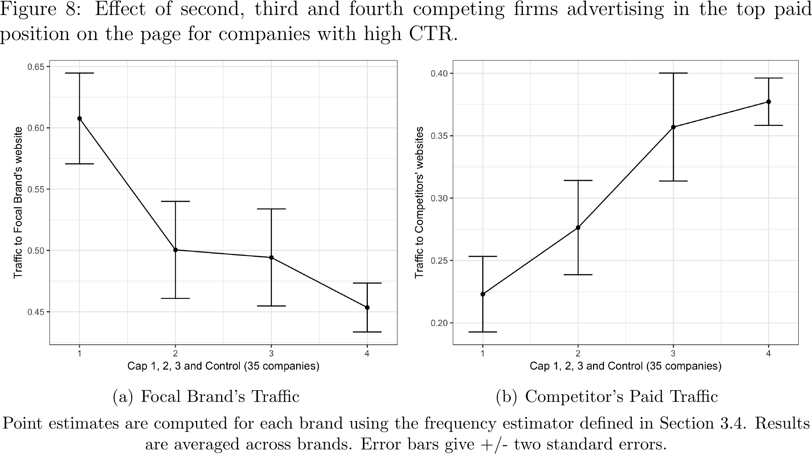
A later paper estimated similar effects in Bing search ads. They found that, when competing brands buy ads on a focal firm’s branded keywords, sponsored search advertising defends traffic that would not otherwise get to the organic result link. The effects were pretty big. The eBay result did not generalize to companies whose competitors bought their own-branded keyword ads.
Did Other Firms Learn from eBay?
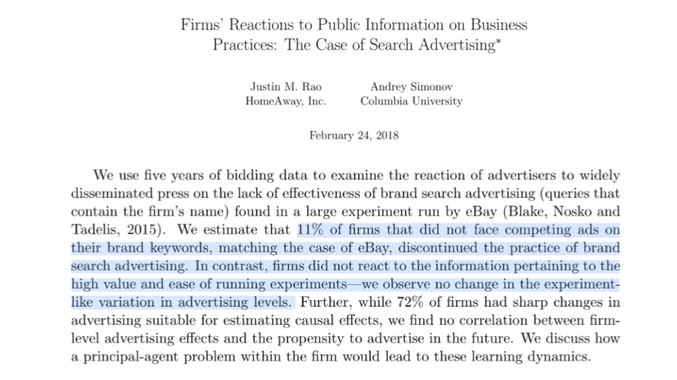
A second follow-up study estimated how Bing advertisers changed their advertising policies after the eBay study was publicized. It found that advertisers largely either (a) maintained the status quo, or (b) stopped advertising entirely. However, advertisers did not start running more experiments. (Why not?)
eBay Case Study: Key Takeaways
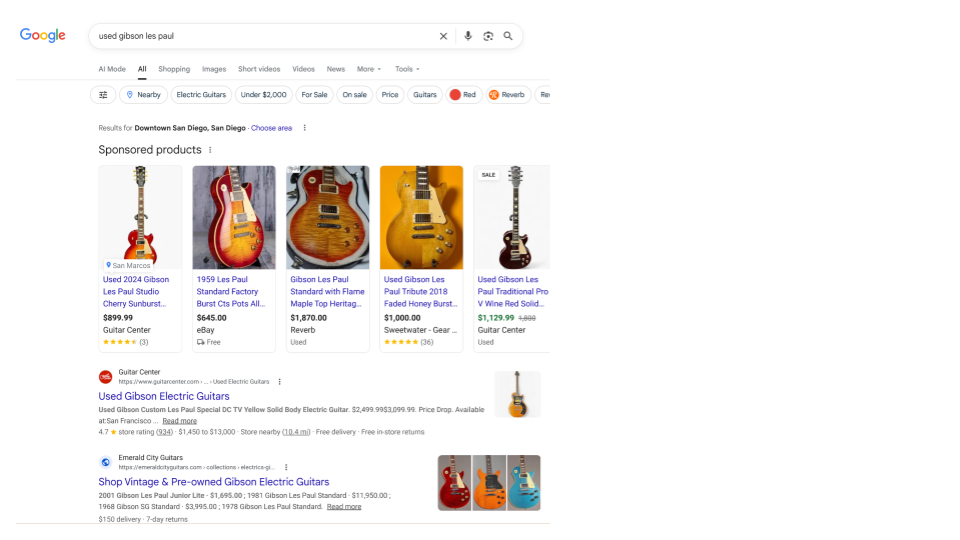
eBay taught us that correlational advertising measurement is questionable, and that firms should use experiments to measure causal advertising effects. However, most companies were not ready for that message yet. This 2026 screenshot shows that eBay lost its organic SERP real estate and started advertising again. That’s exactly what it should do when ads are profitable.
“Grading Your Own Homework”
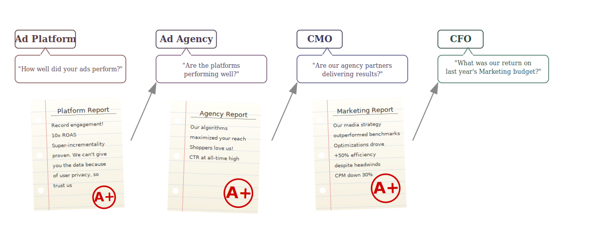
Why didn’t most advertisers get the right message from eBay? A likely culprit: Textbook principal/agent problems. Today, more marketers have internal agencies, better data, and better capacities to run experiments. It may help if advertising measurement team reports to CFO.
2024 Ad Measurement Trends

Incrementality & MMM were trends #1 & #2; the only other trend was e-commerce metric proliferation.
Ad Experiments in GTrends and Buy-side Surveys
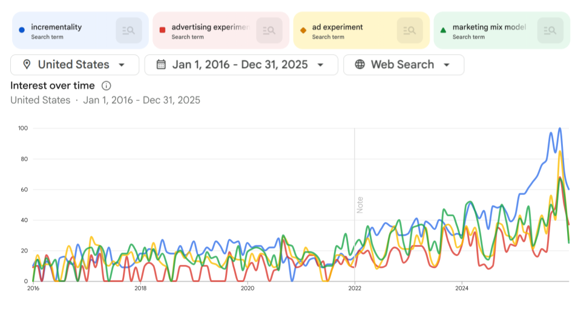

We’re a few years into a generational shift. Smaller, independent ad agencies are making the most noise about incrementality. However, corr(ad,sales) is not going away. Union(correlations, experiments) should exceed either alone.
Fundamental Problem of Causal Inference
- Why causal effects are estimable but not directly observable
Causal Inference Framework
- Suppose we have a binary “treatment” or “policy” variable \(T_i\) that we can “assign” to person \(i\)
- Examples: Send an ad, Serve a webpage, Recommend a product
- Suppose person \(i\) could have a binary potential “response” or “outcome” variable \(Y_i(T_i)\)
- Marketing funnel examples: Visit site, open app, search products, enter email, add to cart, purchase
- “Treatment” terminology came from medical literature; Y could be patient outcome
- Important: \(Y_i\) may depend fully, partially, or not at all on \(T_i\), and the relationship may differ across people
- Person 1 may buy due to an ad; person 2 may stop buying due to an ad
Why Care About Causal Effects?
- We want to maximize profits \(\Pi = \Sigma_i \pi_i(Y_i(T_i), T_i)\)
- Suppose \(Y_i=1\) contributes to revenue; then \(\frac{\partial \pi_i}{\partial Y_i} >0\)
- Suppose \(T_i=1\) has a known cost, so \(\frac{\partial \pi_i}{\partial T_i} <0\)
- Effect of \(T_i=1\) on \(\pi_i\) is \(\frac{d\pi_i}{dT_i}=\frac{\partial \pi_i}{\partial Y_i}\frac{\partial Y_i}{\partial T_i}+\frac{\partial \pi_i}{\partial T_i}\)
- We have to know \(\frac{\partial Y_i}{\partial T_i}\) to optimize \(T_i\) assignments
- Called the “treatment effect” (TE); can be approximated by \(Y_i(T_i=1) - Y_i(T_i=0)\)
- Profits may decrease if we misallocate \(T_i\)
- E.g., buy ads targeting people with inefficiently low response rates
The Fundamental Problem
- We can only observe either \(Y_i(T_i=1)\) or \(Y_i(T_i=0)\), but not both, for each person \(i\)
- The case we don’t observe is called the “counterfactual”
- Causality is a missing-data problem that we cannot fully resolve. We only have one reality
- We can build models to help compensate for missing counterfactuals
The Fundamental Problem of Causal Inference: We cannot directly observe counterfactual outcomes. Therefore, we cannot directly compare \(Y_i(T_i=1)\) to \(Y_i(T_i=0)\) to measure the treatment effect on person \(i\).
So What Can We Do?
- Experiment. Randomize \(T_i\) and estimate \(\frac{\partial Y_i}{\partial T_i}\) as avg \(Y_i(T_i=1)-Y_i(T_i=0)\)
- Called the “Average Treatment Effect”
- Creates new data; costs time, money, effort; deceptively difficult to design and then act on
- Use assumptions & data to estimate a “quasi-experimental” average treatment effect using archival data
- Requires expertise, time, effort; difficult to validate; not always possible
- Use correlations: Assume past treatments were assigned randomly, use past data to estimate \(\frac{\partial Y_i}{\partial T_i}\)
- Easier than 1 or 2
- But \(T_i\) is only randomly assigned when we run an experiment, so what exactly are we doing here?
- Are we paying our DSPs to distribute our ads randomly?
- Fuhgeddaboutit, do not measure
- Some advertisers do this
- Measurement is costly; may be a net negative when not possible to do well
How Much Does Causality Matter?
- Are organizational incentives aligned with profits?
- Data thickness: How likely can we get a good estimate?
- Organizational analytics culture: Will we act on what we learn?
- Individual: promotion, bonus, reputation, career—Will credit be stolen or blame be shared?
- Accountability: Will ex-post attributions verify findings? Will results threaten or complement rival teams/execs?
Analytics culture starts at the top. The value of causal measurement depends on whether the organization will act on what it learns.
Advertising Measurement
- What we measure, challenges, classic eBay measurement case
Measurement of What?

Many people use ‘advertising’ to refer to all commercial speech. In marketing, ‘advertising’ refers to paid media, as distinct from owned media (e.g., organic social, website, emails, direct mail) & earned media (e.g., reviews, news stories). Paid media implies that a ‘publisher’ generated the advertising opportunity by attracting consumer attention; controls the sale; and may constrain the advertiser’s message. Two main ad types:
- Performance advertising: Campaigns designed to stimulate short-run measurable response. Could be any funnel stage, including awareness, consideration, visitation and/or sales.
- Brand advertising: Campaigns designed to stimulate long-run response or change attitudes. Measurable in multiple ways, but measurement will usually be incomplete.
Ad Measurement
- Advertising measurement quantifies ad delivery, exposure and outcomes to improve advertising efforts
- Our focus here is on outcomes/conversions, as these inform future budget decisions
- Delivery and exposure matter most for brand ads. Principles include independence and transparency in measurement; these must be checked, cannot be assumed
- Advertising measurement is hard because ad effects depend on ad content, context, timing, targeting, current market conditions, past advertising & past outcomes—all of which change
- Shooting at a moving target
- Advertising measurement is expensive: must directly inform future choices
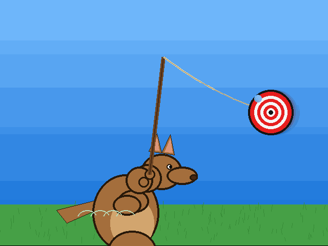
What Do We Measure?
Often, Return on Advertising Spend (ROAS)
\[\frac{\text{Revenue Attributed to Ads}}{\text{Ad Spending}} \text{ or } \frac{\text{Revenue Attributed to Ads}-\text{Ad Spending}}{\text{Ad Spending}}\]
Increasingly, we report incremental ROAS (iROAS) if we have causal identification, i.e. we isolated causal ad effects
- ROAS ≠ iROAS because attribution is usually correlational
We also should measure delivery and funnel-wide KPIs, e.g. brand metrics, visits, add-to-cart, sales, revenue, …
- We usually get economies of scope in measurement
Diminishing Returns

In theory, we buy the best ad opportunities first, so increasing spend should lower marginal returns (“saturation”). Marginal ROAS (mROAS) is the tangent to the curve. Nonlinearity means ROAS ≠ mROAS. We use ROAS for overall evaluation, and mROAS for budget reallocation. The common adage to “max your ROI” usually leaves money on the table. (Why?)
Albertsons: ROAS Varies with Measurement Choices

Albertsons media group reported a meta-analysis of campaigns showing that correlational ROAS results strongly depend on intermediate measurement choices.
Correlational Advertising Measurement
- Frameworks, Problems, Facebook study, Why Correlations Persist
Correlational Ad Measurement
- Correlational advertising measurement is defined by the absence of a treatment/control logic to isolate causal advertising effects from confounding drivers of sales
- Equivalently, by the assumption (usually implicit) that past ads were distributed randomly
- Or, by the belief that we should maximize sales attributed to advertising
Correlational advertising measurement is not defined by an analytical or modeling technique, but we will review 3 common approaches.
1. Lift Statistics
Compare conversion rates between people exposed to ads and people not exposed to ads
\[\frac{Prob.\{Conv.|Ad\}}{Prob.\{Conv.|NoAd\}} \quad \text{or} \quad \text{\% Lift: } \frac{Prob.\{Conv.|Ad\}-Prob.\{Conv.|NoAd\}}{Prob.\{Conv.|NoAd\}}\]
- E.g., if ad-exposed users convert at 0.6% and non-exposed at 0.4%,
Lift Ratio = 1.5, % Lift = 50%
The name ‘Lift’ implies a causal ad effect, but lift statistics can only be incremental when calculated using experimental data. Otherwise they reflect all differences between ad-exposed and non-ad-exposed consumer groups, including ad targeting, context, timing, recent behaviors and platform usage, as well as ad effects. Lift stats are easy to compute and communicate, but often misunderstood as causal.
2. Regression, usually controlling for other observables
Get historical data on \(Y_i\) and \(T_i\) and run a regression
- i could index individuals, places, times, or combinations
- Many frameworks exist, including least squares, vector autoregressions, Marketing Mix Models (MMM), bayesian frameworks
- Google’s CausalImpact R package is popular
- We will go deeper on MMM later
3. Multi-Touch Attribution (MTA)
- Get individual-level data on every touchpoint for every purchaser
- Should include earned media, owned media & paid media (ads, paid influencer & affiliate)
- Choose a rule to attribute purchases to touchpoints
- Single-touch rules: Last-touch, first-touch
- Multi-touch rules: Fractional credit, Shapley
- MTA algorithm searches for touchpoint parameters that best-fit the conversion data given the rule
- Credit then informs future budget allocations across touchpoints
- MTA is designed to maximize attributions; MTA often disregards non-purchasers
- MTA assumes touchpoints are the sole drivers of conversions
- Advertiser-side MTA arose from the open web display market, linking tracking cookies to sales. Has challenges integrating walled gardens due to privacy rules and platform reporting limitations. Some advertiser MTAs live on, but some are zombies. Large platform-side MTA will remain viable and efficient, though limited to data within each walled garden; can advertisers trust/verify?
Amazon Ads MTA combines experiments, machine learning and shopping signals.
Steel-manning Corr(ad,sales)
- Corr(ad,sales) should contain signal
- If ads cause sales, then corr(ad,sales) > 0 (probably) (we assume)
- Some products/channels just don’t sell without ads
- E.g., Direct response TV ads for 1-800 phone numbers
- Career professionals say advertised phone #s get 0 calls without TV ads, so we know the counterfactual (what is it?)
- However, this argument gets pushed too far
- For example, when search advertisers disregard organic link clicks when calculating search ad click profits
- Notice the converse: corr(ad,sales) > 0 does not imply a causal effect of ads on sales; it could be that the ads got shown to the most loyal customers
Problem 1 with Corr(ad,sales)
- Advertisers try to optimize ad campaign decisions
- E.g. surfboards in coastal cities, not landlocked cities
- If ad optimization increases ad response, then corr(ad,sales) will confound actual ad effect with ad optimization effort
- More ads in San Diego, more surfboard sales in San Diego. But would we have 0 sales in SD without ads?
- Corr(ad,sales) usually overestimates the causal effect, encourages overadvertising
Google’s Chief Economist explains in greater detail.
Problem 2 with Corr(ad,sales)
- How do most advertisers set ad budgets? Top 2 ways historically:
- Percentage of sales method, e.g. 1%, 3% or 6%
- That’s why ads:sales ratios are so often measured, for benchmarking
- Competitive parity
- …others…
- Percentage of sales method, e.g. 1%, 3% or 6%
- Do you see the problem here?
This problem is called simultaneity (Bass 1969).

Problem 3 with Corr(ad,sales)
- Leaves marketers powerless vs
bigcolossal ad platforms - Platforms withhold data and obfuscate algorithms
- How many ad placements are incremental?
- How many ad placements target likely converters?
- How can advertisers react to adversarial ad pricing?
- Have ad platforms ever left ad budget unspent?
- Would you, if you were them?
- If not, why not? What does that imply about incrementality?
- The only way to balance platform power is to know your ad profits & vote with your feet
U.S. v Google (2024, Search Case)

This was written by a federal judge who heard mountains of evidence on both sides. Judge Mehta describes Google’s efforts to hide price increases from advertisers, based on internal documents.
Does Corr(ad,sales) Work?

Kellogg faculty and Meta data science collaborated to analyze Meta’s large trove of advertising experiments. Their main research question: Can we estimate causal advertising effects on sales by applying machine learning models to advertising treatment data alone? I.e., can we recover true causal estimates without non-advertising control condition data?
Gordon, Moakler & Zettelmeyer (2023): Data

The setting was auspicious. Machine learning methods work best when applied to thick data with numerous predictors, as is the case in Facebook data. Additionally, Facebook served most ads from content servers to facilitate consistent measurement and reduce ad-blocking.
Gordon, Moakler & Zettelmeyer (2023): Figures

Most of the ad experiments shows causal ad effects on conversions of 0-0.25%, with median lift ratios of 0.05-0.29. Ads had clearer effects on upper-funnel actions (e.g., shopping) than on lower-funnel actions (e.g., purchase); this is common as price or other factors can discourage sales during the shopping process.
Gordon, Moakler & Zettelmeyer (2023): Results

Both Machine Learning frameworks tested failed to recover true incremental ad effects. The correlational advertising effects were mostly overestimated, but not always. This offers strong empirical evidence that models alone cannot substitute for causal identification strategies. Causality is a “data problem,” not a “modeling problem.”
Why Are Some Teams OK with Corr(ad,sales)?
- Some worry that if ads go to zero → sales go to zero
- For small firms or new products, without other marketing channels, this may be good logic
- However, premise implies deeper problems, i.e. need to diversify marketing efforts and find cheaper sources of sales
- Plus, we can run experiments without setting ads to zero, e.g. test 50% vs. 150%
- Some firms assume that correlations indicate direction of causal results
- The guy in the truck bed is pushing forwards right?
- Biased estimates might lead to unbiased decisions (key word: “might”)
- But direction is only part of the picture; what about effect size?
- CFO and CMO negotiate ad budget
- CFO asks for proof that ads work
- CMO asks ad agencies, platforms & marketing team for proof
- CMO sends proof to CFO; We all carry on
- Should ad measurement team report to CFO or CMO?
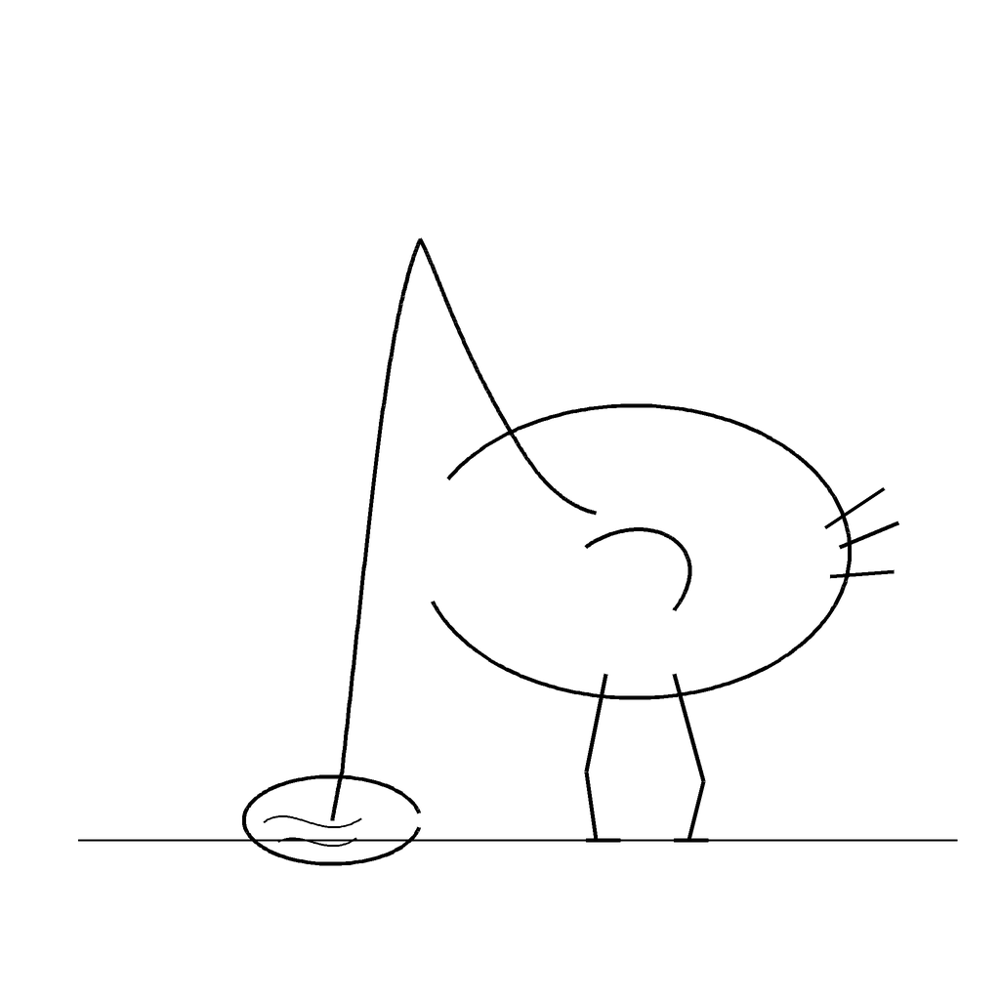
Why Are Some Teams OK with Corr(ad,sales)?
- Managing analytics well requires skill and discipline
- Managers must understand how to integrate experiment results into decisions
- Analysts must have causal inference skillsets
- Organization must tolerate failure in search of data-driven incremental improvements
- Platforms often provide correlational ad/sales estimates
- Which is larger, correlational or experimental ad effect estimates?
- Which one might many client marketers prefer?
- Platform estimates are typically “black box” without neutral auditors
- ““Nobody ever got fired for buying IBM.” [Amazon, Google, Meta]
- Historically, agencies usually estimated ROAS
- Agency compensation usually relies on spending, not incremental sales;
principal/agent problems are common - These days, more marketers have in-house agencies, and split work
- Agency compensation usually relies on spending, not incremental sales;
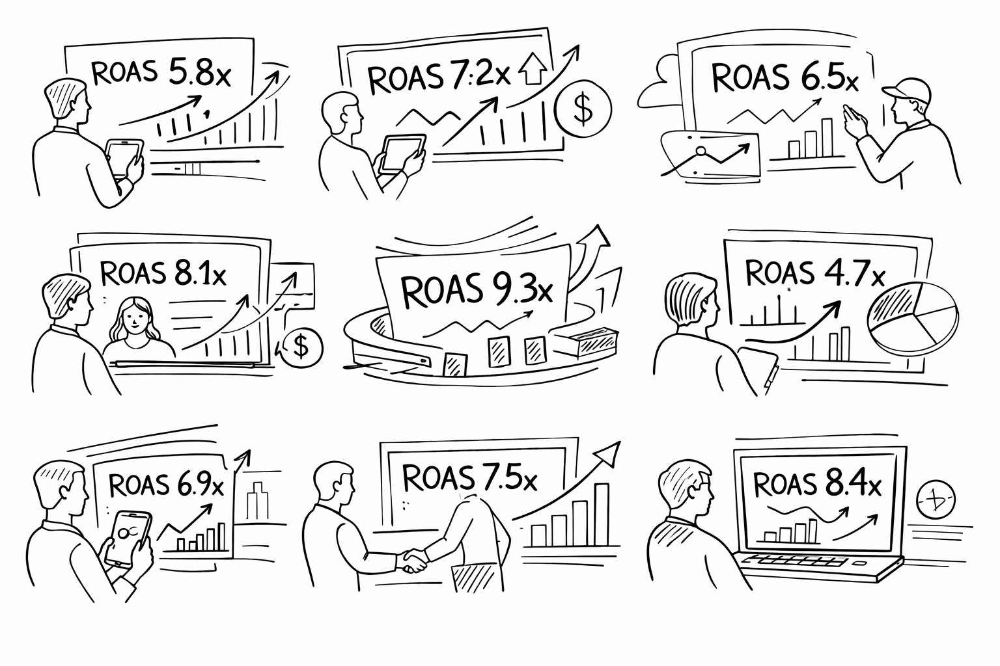
Causal Advertising Measurement
- Experimental designs, necessary conditions, quasi-experiments
Causal Ad Measurement
- Causal advertising measurement is defined by the presence of a treatment/control logic to isolate causal advertising effects from confounding drivers of sales
- We can run experiments to create random variation in advertising treatments
- We can analyze naturally occurring random variation,
AKA quasi-experiments
- Causal means we isolate the treatment effect from confounds
- Sometimes misinterpreted as evidence consistent with a hypothesis
A regression may be either causal or correlational depending on the nature of the advertising data variation.
Popular ad experiments
Randomly assign ads eligibility / holdout to customer groups
- Pros: AB testing is easy to understand, rules out alternate explanations
- Cons: Can we trust the platform’s “black box”? Will we get the data and all available insights?
Randomize messages within a campaign. Mine competitor messages in ad libraries for ideas
- Often a great place to start as it’s nominally free.
- Advertising professionals frequently believe that creative messages are first-order drivers of ad effects (e.g., Circana 2023, Kantar 2024, Magna+Yahoo 2025)
Randomize bids and/or consumer targeting criteria
Randomize budget across platforms, publishers, times, places, behavioral targets, contexts
Platforms usually tune ad delivery algorithms to maximize post-advertising conversions, not incremental conversions. That is why changing a campaign attribute usually induces nonrandom variation in advertising treatments.
Experimental Necessary Conditions
- Stable Unit Treatment Value Assumption (SUTVA)
- Treatments do not vary across units within a treatment group
- One unit’s treatment does not change other units’ potential outcomes:
May be violated when treated units interact on a platform - Violations called “interference”; remedies usually start with cluster randomization
- Observability
- Non-attrition, i.e. unit outcomes remain observable
- Compliance
- Treatments assigned are treatments received
- Ad blocking can induce noncompliance, which we usually resolve by estimating Intent-to-Treat effects
- Statistical Independence
- Random assignment of treatments to units. “Balance tests” help to check
- When platform algorithms distribute ads nonrandomly, we call it “divergent delivery”
Before You Kick Off Your Test…
- Run A:A test before your first A:B test. Validate the infrastructure before you rely on the result
- Shows the effect size a given test duration is powered to detect
- Shows whether random assignment is working, as it’s sometimes coded incorrectly
- Can we agree on the opportunity cost of the experiment? “Priors”
- How will we act on the (uncertain) findings? Have to decide before we design. We don’t want “science fair projects”
- Simple example: Suppose we estimate iROAS at 1.5 with c.i. [1.45, 1.55]. Or, suppose we estimate iROAS at 1.5 with c.i. [-1.1, 4.1]. What actions would follow each?
Platform Experiments Advisory
- On Meta, Lift Tests are true experiments, whereas “A/B Tests” confusingly do not control for algorithmic user/ad selection (called “divergent delivery”). In Meta’s “A/B Test,” consumers are randomized to treatment eligibility, rather than treatment itself, “treating” the algorithm that determines ad delivery, not the consumers themselves. Burtch et al. (2025) go deeper.
- Some platforms require advertisers meet minimum spend levels to use on-platform experimentation tools. You can roll your own experiments by randomizing ad budget across time and targeting criteria
- Prominent exception: Ghost ads, an ingenious system to randomly withhold ads from auctions and maximize experiment efficiency
Display Ad Experiments can be Tricky
- Noisy environments: Treatments compete with advertisers, rivals, content, algorithms and market conditions, and interactions abound
- Similar to how we have limited causal knowledge about nutrition and human welfare
- Compliance: Ad blocking, ad avoidance, non-visibility and non-delivery can all prevent treatment
- Identity fragmentation: User may be treated on mobile, then convert on nontreated device or nontreated channel (e.g., retail store)
- Platforms optimize for total conversions, not incremental conversions
Johnson’s “Inferno” guide reviews these challenges and best practices for experimenters working at the frontier of digital advertising research.
Productive Experiments…
- Serve customer interests
- Working against customers drives customers away
- Live within theoretical frameworks
- We require hypotheses if we want to learn from tests
- Test quantifiable hypotheses
- Choose test size & statistical power based on hypothesis
- Analyze all relevant customer metrics
- Test positive & negative metrics, e.g. conversions & bounce rates
- Test short-run & long-run metrics, e.g. trial & repurchase
- Acknowledge possible interactions between variables
- E.g. price advertising effects will always depend on the price
Quasi-experiments Vocabulary
- Model: Mathematical relationship between variables that simplifies reality, e.g. y = xβ + ε
- Identification strategy: Set of assumptions that isolate a causal effect \(\frac{\partial Y_i}{\partial T_i}\) from other factors that may influence \(Y_i\)
- A strategy to compare apples with apples, not apples with oranges
- Popular quasi-experimental techniques: Difference-in-differences, regression discontinuity, instrumental variables, synthetic control, matching. Each technique predicts what counterfactual would have occurred without treatment
- We say we “identify” the causal effect if we have an identification strategy that reliably distinguishes \(\frac{\partial Y_i}{\partial T_i}\) from possibly correlated unobserved factors
- If you estimate a model without an identification strategy, you should interpret the results as correlational
- This is widely misunderstood. We can learn from correlational models, but too many people mistakenly infer causality
Sant’Anna (2026) maintains a free online resource for difference-in-differences theory and estimation code.
Diff-in-Diffs Helped Identify Cholera Cause
In the 1850s, an English doctor named John Snow suspected that cholera spread via food and drink, rather than the popular theory of airborne transmission. Snow realized a natural experiment would let him test his theory.
Some London neighborhoods were served by multiple water companies. One company, Lambeth, moved its intake pipes higher up the Thames to obtain cleaner water, whereas its competitor Southwark and Vauxhall maintained its nearby intake location.
Snow went door to door to count customers who subscribed to each water company. He also matched those households’ records against the city’s mortality records to calculate cholera death rates by water provider and by time. He calculated that cholera death rates in 1849 were 85 per 100k Lambeth customers and 135 per 100k S&V customers. In 1854, after the water intake change, death rates were 19 per 100k Lambeth customers, and 147 per 100k S&V customers.
If household cholera risk factors were unrelated to drivers of water company selection, then the Southwark and Vauxhall cholera death rate in 1854 estimated the Lambeth counterfactual, showing that cleaner water meaningfully reduced cholera death rates. This discovery came before the germ theory of disease in the 1860s or the modern development of experimental methods. (What are the two diffs?)
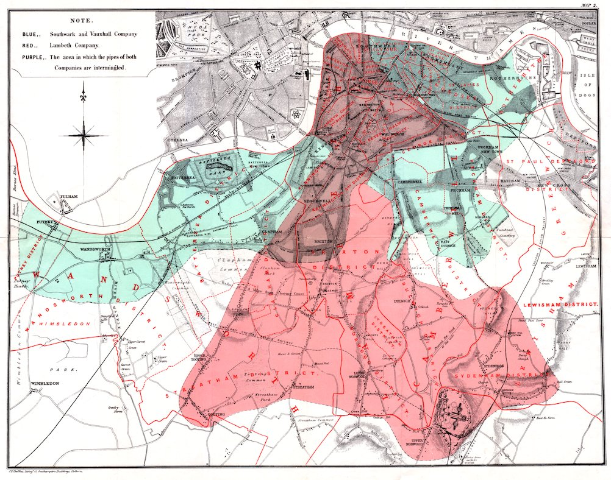
Ad/Sales: Quasi-experiments
Goal: Find a “natural experiment” in which \(T_i\) is “as if” randomly assigned, to identify \(\frac{\partial Y_i}{\partial T_i}\)
Possibilities:
- Firm started, stopped or pulsed advertising without changing other variables
- Competitor starts, stops or pulses advertising
- Discontinuous changes in ad copy
- Exogenous changes in ad prices, availability or targeting (e.g., elections)
- Exogenous changes in addressable market, web traffic, other factors
DFS TV Ad Effects on Google Search

I made this graph showing DraftKings and FanDuel branded keyword search volume from 9:01-9:59pm E.S.T. during the 2015 NFL season opener. TV ads increased search volume by 15-25x, with positive competitive spillovers, and effects that returned to baseline within 5 minutes. Commercial minutes are shaded, showing it was the presence of DFS ads, not just the absence of the game.
Ad/Sales: Quasi-experiments (2)
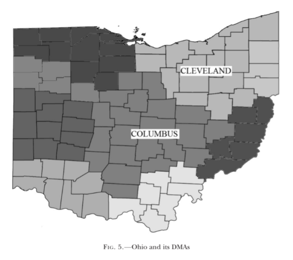
Shapiro et al. (2021) used a county-border approach to identify how local TV advertising affected package goods sales. The idea is that geographic media market boundaries are drawn based on broadcast signal patterns based on differences from city centers, such that consumers living on either side of the boundary are very similar. Therefore, boundary county sales can predict what in-market counterfactual sales would have been in the absence of advertising.
See also Shapiro (2018)
Experiments vs. Quasi-experiments
- Experimentalists and quasi-experimentalists differ in beliefs, cultures & training, not unlike Bayesians vs. frequentists
- Generally speaking, quasi-experiments:
- Always depend on untestable assumptions (as do experiments)
- Are bigger, faster & cheaper than experiments when valid
- Will lead us astray when not valid
- Are easy to apply without validity
- Range from challenging to impossible to validate
- Experiments & quasi-experiments should be “yes-and-when-valid,” not “either-or”
Marketing Mix Models
- Definition, components, considerations, and open-source tools
Marketing Mix Models (MMM)
- The “marketing mix” consists of the 4 P’s
- Product line, length and features; price & promotions; advertising, PR, social media, reviews; retail distribution
- A “marketing mix model” (MMM) typically uses marketing mix variables to explain sales
- Idea goes back to the 1950s
- E.g., suppose we increase price & ads at the same time; what happens to sales?
- When possible, MMM should include competitor variables also
- A “media mix model” (mMM) relates sales to ads/marcom channels or publishers
- MMM and mMM share many attributes and techniques
- MMM goal is to evaluate past marketing ROAS by channel and support future budgeting decisions
Pioneering works: Magee (1953), Weinberg (1956), Vidale & Wolfe (1957), Little (1972)
MMM Components
- MMM analyzes aggregate data, usually 3-5 years of weekly or monthly intervals, usually across a panel of geographic markets
- Aggregate data are privacy-compliant & often do not require platform participation; helps explain MMM comeback
- Predictors include ad spending/exposures by ad type; outcomes measure sales, volume or revenue
- MMM usually controls for (a) trends, (b) seasonality, (c) macroeconomic factors, (d) known category-specific demand shifters, (e) diminishing marginal returns, (f) possibly long-lasting advertising effects (“carryover”)
- Outputs include ad elasticities, ROAS measures, sales predictions based on counterfactual budget reallocations
- MMM parameters can be interpreted causally if and only if adspend data are generated with a randomization strategy built in
MMM Considerations
- Data availability, accuracy, granularity and refresh rate are all critical
- MMM requires sufficient variation in marketing predictors, else it cannot estimate coefficients
- “Model uncertainty”: Results can be strongly sensitive to modeling choices, so we usually evaluate multiple models to gauge sensitivity to alternate assumptions
- MMM results are correlational without experiments or quasi-experimental identification
- Correlations can be unstable; Bayesian estimation can help regularize
- MMM results can be causal if you induce exogenous variation in ad spending
- MMM results can be calibrated using causal measurements, e.g., by using experiments to calibrate Bayesian prior beliefs, or by rewarding models for conformance to external incrementality estimates
Open-Source MMM Frameworks
- Meta Robyn (2024). Excellent training course
- Cool features: Causal estimate calibration, Set your own objective criteria, Smart multicollinearity handling
- Google Meridian (2025). Excellent self-starter guide
- Cool features: Bayesian implementation, Hierarchical geo-level modeling, reach/frequency distinctions
- Robyn & Meridian both include budget-reallocation modules
Others: PyMC-Marketing, mmm_stan, BayesianMMM
Also relevant: MMM data simulator
Putting ideas into practice
- Who’s doing what and why
Who Tests the Most?

CEO Quotes on Experimentation
“To invent you have to experiment, and if you know in advance that it’s going to work, it’s not an experiment.”
—Bezos, Amazon
“In a culture that prioritizes curiosity over innate brilliance, ‘the learn-it-all does better than the know-it-all.’”
—Nadella, Microsoft
“We ship imperfect products but we have a very tight feedback loop and we learn and we get better.”
—Altman, OpenAI
“You do a lot of experimentation, an A/B test to figure out what you want to do.”
—Chesky, Airbnb
“The only way to get there is through super, super aggressive experimentation.”
—Khosrowshahi, Uber
“Create an A/B testing infrastructure.”
—Huffman, on his top priority as Reddit CEO
Advertising Experiment Frequency

Advertising Experiment Effectiveness

Companies with deep experimental practices tend to get much better results per ad dollar spent.
Ironically, results are correlational; experimentation is not randomly assigned.

Kantar 2025: Measurement Methods

Incrementality Adoption & Barriers


MMM Usage & Priorities


What would you do?


Leading a traditional team to adopt incrementality can be a resume headline and interesting challenge, especially if you apply it to solve your hardest challenge. However, it requires leadership support, you usually cannot do it alone. If structural incentives misalign, consider a new role.
Wrapping Up
- Takeaways, Resources for further study, Acknowledgements
Takeaways
Fundamental Problem of Causal Inference: We can’t observe all data needed to optimize actions. This is a missing-data problem, not a modeling problem.
- Common remedies: Experiments, Quasi-experiments, Correlations, Triangulate; Ignore
Experiments are the gold standard, but are costly and challenging to design, implement and act on
Ad effects are subtle but that does not imply unprofitable. Measurement is challenging but required to optimize profits

Resources for Further Study
Paparo (2025): Insider’s account of programmatic advertising development from 2000-2025
Content providers to follow: Adexchanger, Adweek, Digiday, Marketecture
Project Eidos: IAB’s effort to define admeas principles, standards, and frameworks
Gordon et al. (2020): Discusses iROAS estimation challenges and remedies
Dew et al. (2024): Smart discussion of key MMM assumptions
Luca & Bazerman (2020): Goes deep on digital test-and-learn considerations
Athey & Imbens (2024): on designing complex experiments
Barajas et al. (2021): Online Advertising Incrementality Testing And Experimentation: Industry Practical Lessons

Acknowledgements
- Joel Barajas, Rick Bruner, Peter Daboll, Tom Flanagan, and Prabhath Nanisetty for helpful comments
- Colleagues and students who helped improve earlier versions
- Benedict Evans for inspiring the assertion-evidence slide format; McDermott & Butts for the quarto theme